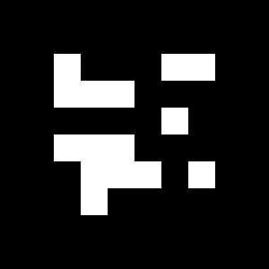
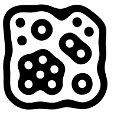
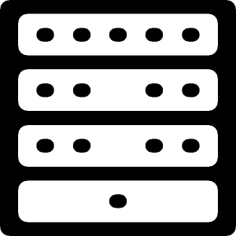

Fiducial Marker Detection¶
The ICLMarkers package provides a general interfaces for most different types of fiducial marker detection methods. The essential classes of this package are markers::FiducialDetector and markers::Fiducial.
The FiducialDetector implements a plugin-based system that can be configured at instantiation time in order to use a certain marker detection backend. Dependent on the selected backend, the detected markers (of type Fiducial) provide a different set of information – some can only provide 2D information, others do also provide 3D pose information. Also dependent on the chosen plugin type, markers have to be loaded in a certain way that is also generalized by the single method FiducialDetector::loadMarkers.
Table of Contents¶
Supported Marker Types¶
The marker detection frameworks supports tracking of a set of common fiducial marker types. Due to the generic marker detection interface FiducialDetectorPlugin we are able to add further marker detection backends in the future.
ARToolkit Markers (“art”)¶
{kind=link}
One of the first freely available marker detection library is the ARToolKit. The original framework was mainly developed as toolkit for augmented reality applications. However the whole framework is usually difficult to combine with other image processing libraries. In particular its default version does not support to pass external image data.
The marker detection is based on finding quadrangular black image regions, whose corners a detected. The marker center is then simply rectified and matched against a set of loaded marker center images using normalized cross-correlation of other distance metrics. Basically arbitrary gray-scale images can be used as possible marker centers, however, the matching of the central pattern is usually very slow and not very robust.
BCH Markers (“bch”)¶
{kind=link}
These fiducial markers are probably the best available so far. The idea of using a self-error-correcting 2D binary BCH-coded pattern for encoding marker IDs was originally introduced with the unluckily no longer available ARTag library. A later fork of the ARToolkit library called ARToolkit+, now known as Studierstube Tracker implemented the same algorithm again, however ARToolkit+ was in our opinion still difficult to use and to integrate with, not only due to a remaining internal dependency to the ARToolkit library.
Our implementation of the BCH-code marker detection plugin uses the same pre-processing as the ARToolkit plugin for the detection of quadrangular black image regions. However, in contrast to the ARToolKit plugin, the extraction of the marker’s ID is completely different. Here, the marker’s center is rectified, and binarized into a 6 by 6 binary pattern, that is reinterpreted as BCH binary code and matched against all registered BCH patterns in four rotations. In this step, the BCH-coding module can automatically correct up to 3 bit errors while the false positive ratio remains extremely low.
BCH marker detection is very fast and accurate with very low false positive rate. Usually, this is the best choice.
Hierarchical (“Amoeba”) Markers¶
{kind=link}
The amoeba style hierarchical markers provided by the reactivision software. Amoeba fiducial markers cannot be detected in 3D. They do only provide 2D center and rotation and the 2D boundary. However, their detection is very fast and robust, as long as each marker region is not smaller than a pixel. Actually, the original “amoeba” markers must not be used with other marker detection libraries. However, since the actual marker detection and ID encoding is just performed on the basis of the markers hierarchical region structure (in the example image, a black region, surrounding a white region containing 4 black regions with no sub-regions, 2 black regions with one sub-region, one black region with two sub-regions and one black regions with six sub regions). Whenever the detection system detects such a region structure in the binarized image’s region graph, it will be detected and identified as this marker. For the original “amoeba”-markers, a genetic algorithm was used to minimize the marker size while preserving a given optimal region-width. The region structure is implemented and explained with the TwoLevelRegionStructure class.
Special Markers of Type (“icl1”)¶
{kind=link}
Originally these markers were developed for tracking the deformation of a sheet of paper in real time [1] The markers consist of 4 vertical sections. Each of these sections contains a number of dot-regions. Therefore, the marker detection method is comparable to other hierarchical markers such as “amoeba”, however, the well defined marker structure allows for the systematic identification of every single marker region, which provides better 3D pose-estimation results.
| [1] | http://pub.uni-bielefeld.de/publication/2281366 |
An Easy Example¶
1 2 3 4 5 6 7 8 9 10 11 12 13 14 15 16 17 18 19 20 21 22 23 24 25 26 27 28 29 30 31 32 33 34 35 36 37 38 39 40 41 42 43 44 | #include <ICLQt/Common.h>
#include <ICLMarkers/FiducialDetector.h>
HSplit gui;
GenericGrabber grabber;
// the global detector class
// here, using the first 100 "bch"-markers
FiducialDetector fid("bch","[0-100]","size=30x30");
void init(){
fid.setConfigurableID("fid");
gui << Draw().handle("draw")
<< Prop("fid").maxSize(18,99)
<< Show();
grabber.init(pa("-input"));
}
void run(){
static DrawHandle draw = gui["draw"];
const core::ImgBase *image = grabber.grab();
const std::vector<Fiducial> &fids = fid.detect(image);
draw = image;
draw->linewidth(2);
for(unsigned int i=0;i<fids.size();++i){
utils::Point32f c = fids[i].getCenter2D();
float rot = fids[i].getRotation2D();
draw->color(0,100,255,255);
draw->text(fids[i].getName(),c.x,c.y,10);
draw->color(0,255,0,255);
draw->line(c,c+utils::Point32f( cos(rot), sin(rot))*100 );
draw->color(255,0,0,255);
draw->linestrip(fids[i].getCorners2D());
}
draw.render();
}
int main(int n, char **ppc){
return ICLApp(n,ppc,"[m]-input|-i(2)",init,run).exec();
}
|
Creating Marker Images¶
We also provide an easy to use application that allows for the creation of marker images. icl-create-marker is able to create marker images for “bch”, “art” and “icl1” markers. The original “amoeba” markers are not free and cannot be published as part of the library. For “bch” markers, the icl-create-marker* application ca be set up to use a certain border width, which is given in units of the 6 by 6 bch pattern in the center of the marker. The default value of 2 mean, that the whole marker consists of 10 by 10 cells, where the outer two cells are the marker border and the inner 6 by 6 cells carry the markers bch binary pattern. Even though for certain cases or a given set of markers, this can be adapted, we strongly recommend to use the default setting which provides the best compromise between detectability and marker size. While for “bch” type markers, a given integer id (in range [0,4095]) is sufficient, for “art” markers, a center image must be provided (as a file-name). Here, the markers border width is given as a real valued border ratio which defines the ratio between border and center image pixels. For the detection is is very important that the used FiducialDetector instance is set up with the correct values for border ratio (and border width in case of using “bch” markers). Creating a set of 10 bch markers could e.g. be realized via command line in the bash:
for (( i=0 ; $i<10 ; i++ )) ; do icl-create-marker -i bch $i -o bch$i.png ; done
Benchmarks¶
The benchmarks were applied on 1000x1000 images of type core::Img8u showing regular grid or markers. Between the markers, a single pixel line of white pixels was added, so the actual image size was exactly 1020x1020 (in case of 50x50 pixel marker size) and 1010x1010 (in case of 100x100 pixel marker size) pixels. The benchmark system was a Core 2 Duo 2.4GHz, 4GB RAM, Ubuntu 12.04 32bit. For BCH Markers, we used different marker sizes of 50x50 and 100x100 pixels. For all other marker types, only 100x100 pixel markers were used. The hierarchical methods (“icl1” and “amoeba”) should be independent from the marker size, because their identification algorithms runs on the image’s region graph rather than on its pixels. We did not run tests on the “amoeba”-style markers, because these mare are difficult to generate and their detection speed should be very similar to the “icl1”-type markers. For the ARToolKit markers, an unrealistic count of 100 reference markers (much more that it could realistically distinguish) were loaded, and it is worth mention that the “art” marker detector did usually not find and identify all marker correctly.
| Markers/Plugin | “bch” | “icl1” | “art” |
|---|---|---|---|
| 400 (50x50 px) | 50ms | ||
| 144 (50x50 px) | 22ms | ||
| 64 (50x50 px) | 13ms | ||
| 16 (50x50 px) | 7ms | ||
| 100 (100x100 px) | 23ms | 20ms | 56ms |
| 36 (100x100 px) | 13ms | 10ms | 25ms |
| 16 (100x100 px) | 8ms | 7ms | 14ms |
| 4 (100x100 px) | 6ms | 5ms | 10ms |
The results demonstrate the outstanding performance of the detection system. With a realistically visible 64 of size 50x50 pixels, the theoretical framerate is about 76Hz. A single Fire-Wire 800 bus reaches a maximum theoretical framerate of 63Hz at this image size (1020x1020).
Note
The whole detection system runs single-threaded and is mainly limited by the connected component analysis of the binarized image.